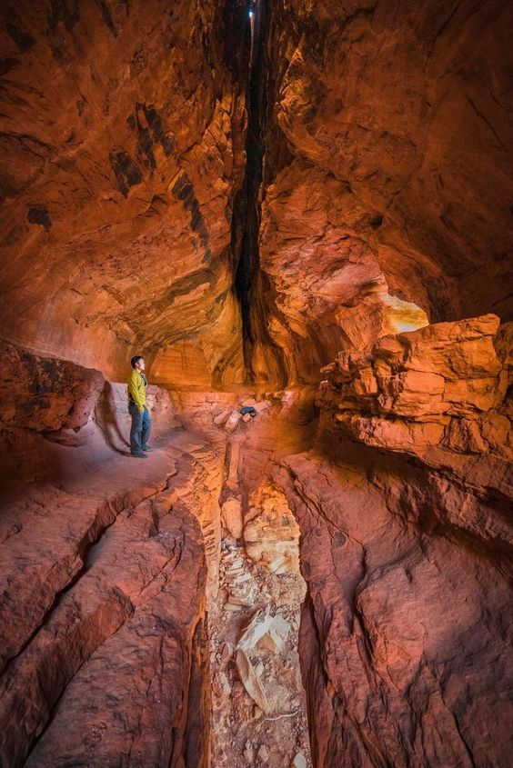

|
The Belum Caves is the largest and longest cave system open to the public on the Indian subcontinent, known for its speleothems, such as stalactite and stalagmite formations. |
The Belum Caves have long passages, galleries, spacious caverns with fresh water and siphons. |
|  |
This cave system was formed over the course of tens of thousands of years by the constant flow of underground water from the now-disappeared river Chitravathi. |
| It is one of the centrally protected Monuments of National Importance. |
|
| Belum is part of a larger complex of caves carved out of the limestone deposits in the Erramalai region. |
Even though the Belum Caves were known to local people, the first records of site come from the expedition report of British geologist and archaeologist Robert Bruce Foote, in 1884. |